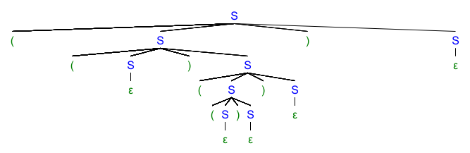
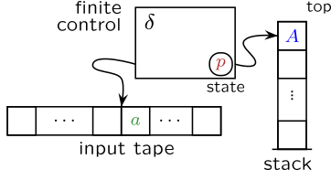
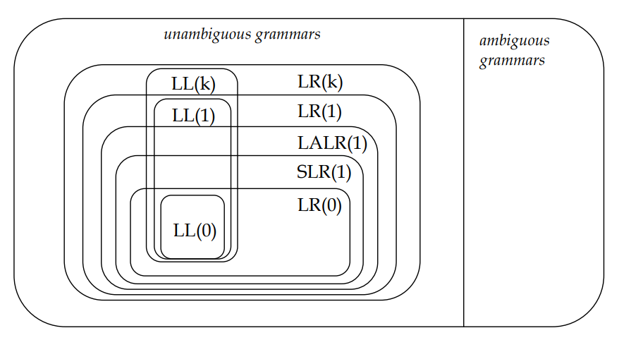
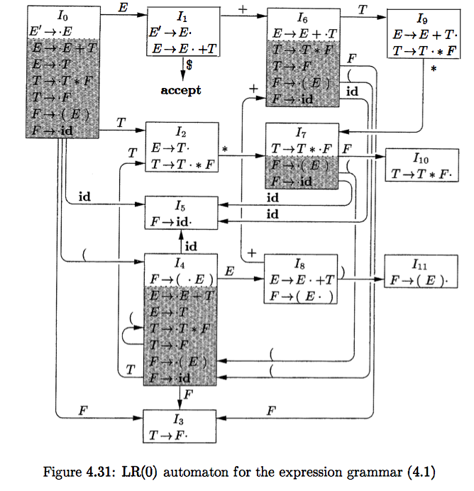

一、前言
从这个精神王国的圣餐杯里，
他的无限性给他翻涌起泡沫。
—— 格奥尔格·威廉·弗里德里希·黑格尔《精神现象学》下卷 第八章 绝对知识
二、从正则文法到上下文无关文法
词法分析阶段，我们可以使用正则文法描述词的定义，这是因为词的结构是无嵌套的。也就是说，词只会由例如前缀、后缀以及结构的顺序重复等概念描述，不可能出现需要前后匹配的地方。举个例子，正则文法不能定义形如 $12344321$ 的回文数；或形如 $(()(()))$ 的括号结构。
然而，所有的高级语言却都是嵌套的。通过嵌套，高级语言能够表示更加复杂的结构，实现控制流、子程序、作用域、类等等高级概念。因此，正则文法并不能描述高级语言的语法，我们需要使用 2 型文法，也即上下文无关文法描述高级语言。2 型文法区别于 3 型文法就在于其嵌套性。
举个例子，我们可以将上述括号结构用如下 2 型文法定义：
$$ S \rightarrow (S)S | \epsilon $$其中规则 $S \rightarrow S(S)$ 中左括号和右括号同时出现，这样就保证了对于一个左括号，必定有一个右括号与其匹配。因而我们说上面的文法具有嵌套性。
而 3 型文法则不同。由于左线性和右线性的约束，3 型文法中不可能出现一条规则中右侧有多个终结符的情况。
不过虽然 2 型文法相较于 3 型文法具有更强的表达能力，但是这也为其解析提供了一定的困难。我们可以选择用前面定义的文法给出 $(()(()))$ 的文法树：

可以看出，相较于 3 型文法的文法树，2 型文法的文法树更像是树：并不是只向一侧增长，而是在任意地方都可能产生子树。因此，2 型文法的推导或归约过程不再能看作状态的转移，我们需要用有穷自动机之外的另一种模型描述，该模型应当具有接受嵌套结构的能力。这就是下推自动机。
三、下推自动机
（1）例子：判断有效括号问题
初学编程的时候各位应该都做过类似的题目，那就是判断有效括号。实际上这是一个编译问题。我们可以使用编译理论的语言将该问题表述为：对于符号集 $\Sigma = \{`(`, `)`, `[`, `]`, `\{`, `\}`\}$，对给定的括号文法 $G$，对于任意 $s \in \Sigma^*$，给出一个算法，判断是否有 $s \in L(G)$（即 $s$ 是否被文法 $G$ 接受）。
很明显，括号文法 $G$ 是 2 型文法，而我们又是如何解决这一问题的呢？由于左括号一定要与右括号匹配，因此我们要做的就是记录左括号的嵌套状态，并在读入右括号时尝试与其匹配。又由于嵌套具有后进先出的特点，所以我们会使用栈结构记录嵌套状态。具体的实现如下：
def is_valid(s: str):
match_cases = {'(': ')', '[': ']', '{':'}'}
def is_match(left: str, right: str):
return match_cases[left] == right
stack = []
for ch in s:
if ch in match_cases.keys():
stack.append(ch)
else:
if len(stack) == 0 or not is_match(stack.pop(), ch):
return False
return len(stack) == 0
从具体到一般，栈结构是处理嵌套的普遍方法。因而从 3 型文法到 2 型文法，我们需要做的就是在有穷自动机之外增加一个堆栈结构，使其能够存取当前状态之外的其他信息。这样得到的自动机称为下推自动机（Pushdown Automaton, PDA）。
（2）下推自动机的介绍
非正式地说，下推自动机就是一个增加了堆栈的有穷自动机。而也因为增加了堆栈结构，下推自动机的状态转移取决于读入符号、当前状态和栈顶元素三部分；同时在转移时，下推自动机也可以同时操作堆栈，执行入栈出栈操作。
下推自动机的结构如下图所示，包括了输入符号序列 input tape、转移关系表 finite control、状态 state 以及堆栈 stack。

在运行时，下推自动机会按顺序读入符号。读入符号之后查找转移关系表，通过读入符号、当前状态和栈顶元素索引得到转移到的目标状态和要进行的堆栈操作。其中堆栈操作包括将某符号入栈、出栈或者不进行操作。在最后，下推自动机读入所有符号，并根据当前状态判断是否接受该符号串。
与有穷自动机类似，根据 ”在给定读入符号、当前状态和栈顶元素下，是否允许存在多种不同的可选操作“ 可以将下推自动机分为不确定的下推自动机（NPDA）和确定的下推自动机（DPDA）。然而又不同于有穷自动机，NPDA 和 DPDA 并不等价。NPDA 能够识别所有 2 型文法所定义的语言（即 2 型语言），但 DPDA 却只能识别确定性上下文无关语言（Deterministic Context-free Language, DCFL）。这是 2 型语言的一个真子集。
尽管 NPDA 能够识别 2 型语言，但在编译领域中我们只使用 DPDA 实现语法分析器。并且为了语法分析器的实用性，我们还需要对其进行更加精巧的设计。
因为下推自动机的理论与真正实用的语法分析器的关系不大，所以本文就不再介绍下推自动机的理论了。
四、语法分析的一般方法
所有的语法分析器都是 DPDA。但根据其设计思路的不同，又分为自顶向下分析器（Top-Down Parsers）和自底向上分析器（Bottom-up Parsers）。两类分析器所使用的解析方法分别称自顶向下分析和自底向上分析。
（1）自顶向下分析
自顶向下分析利用了文法理论中的 “推导“ 的视角。将句子的解析视为从文法开始符号起，不断运用规则推导从而生成与要解析的句子相同的句子的过程。原理是若 $Z \xRightarrow[G]{+} S$，则 $S \in L(G[Z])$，否则 $S \notin L(G[Z])$。
自顶向下分析器的栈中存储的是当前还未匹配的句型后缀。在每一步中，分析器都会检查栈顶符号以及输入串首部符号，并 ”按照一定方法“ 选择采取推导、匹配、接受或拒绝动作。其中：
- 推导：指使用文法中某条规则将符号栈顶的非终结符推导为规则右侧的符号序列，并按从右到左的顺序入栈。
- 匹配：指符号栈顶的终结符和输入串首部的终结符相同时，读入输入串首部终结符并使栈顶终结符出栈。这一操作意味着当前句型的终结符前缀增加了一个终结符。
- 接受：指当读入输入串中所有符号后，判断符号栈是否为空。如为空则接受该输入串。
- 拒绝：指当出现无法推导的情况时，判断拒绝该输入串。
我们还以之前定义的括号文法 $G[S]$ 为例，查看输入符号串 $(()(()))$ 的自顶向下分析过程。如下表所示：
需要注意：
- 下面的符号栈的底部位于最左侧，因此符号栈中的符号顺序是从右到左，与正常的书写顺序相反。
- 我们在符号序列的最右侧加上 $\#$ 表示到达符号序列的末尾。
| 符号栈 | 输入串 | 动作 |
|---|---|---|
| $\#S$ | $(()(()))\#$ | 推导 $S \rightarrow (S)S$ |
| $\#S)S($ | $(()(()))\#$ | 匹配 |
| $\#S)S$ | $()(()))\#$ | 推导 $S \rightarrow (S)S$ |
| $\#S)S)S($ | $()(()))\#$ | 匹配 |
| $\#S)S)S$ | $)(()))\#$ | 推导 $S \rightarrow \epsilon$ |
| $\#S)S)$ | $)(()))\#$ | 匹配 |
| $\#S)S$ | $(()))\#$ | 推导 $S \rightarrow (S)S$ |
| $\#S)S)S($ | $(()))\#$ | 匹配 |
| $\#S)S)S$ | $()))\#$ | 推导 $S \rightarrow (S)S$ |
| $\#S)S)S)S($ | $()))\#$ | 匹配 |
| $\#S)S)S)S$ | $)))\#$ | 推导 $S \rightarrow \epsilon$ |
| $\#S)S)S)$ | $)))\#$ | 匹配 |
| $\#S)S)S$ | $))\#$ | 推导 $S \rightarrow \epsilon$ |
| $\#S)S)$ | $))\#$ | 匹配 |
| $\#S)S$ | $)\#$ | 推导 $S \rightarrow \epsilon$ |
| $\#S)$ | $)\#$ | 匹配 |
| $\#S$ | $\#$ | 推导 $S \rightarrow \epsilon$ |
| $\#$ | $\#$ | 接受 |
当然，上表虽然表现了自顶向下分析的一般方法，但却未指出何时应当选取何种规则进行推导。在具体的自顶向下分析方法中，则会处理这些并未明确的内容。在本文后续将会介绍常用的自顶向下方法 LL(1) 分析法。
（2）自底向上分析
自底向上分析则利用了文法理论中的 “归约“ 的视角。将句子的解析视为从句子开始，不断运用规则归约句型成分，最终归约为文法开始符号的过程。原理是若 $Z \xLeftarrow[G]{+} S$，则 $S \in L(G[Z])$，否则 $S \notin L(G[Z])$。
和自顶向下时类似，在自底向上分析器运行的每一步中，分析器都会检查栈顶符号以及输入串首部符号，并 ”按照一定方法“ 选择采取移进、归约、接受或拒绝动作。其中：
- 移进：指读入输入串的一个符号并将其入栈。移进的过程是寻找句柄的过程。
- 归约：指栈顶部的一部分符号串被识别为句柄时，按照某条规则进行归约，并将归约的结果入栈。 符号栈顶的终结符和输入串首部的终结符相同时，读入输入串首部终结符并使栈顶终结符出栈。这一操作意味着当前句型的终结符前缀增加了一个终结符。
- 接受：指当读入输入串中所有符号后，判断符号栈中是否只有单一开始符号。如是则接受该输入串。
- 拒绝：指当出现无法归约的情况时，判断拒绝该输入串。
我们还使用上一小节的例子，只不过这次展示自底向上分析的一般过程：
| 符号栈 | 输入串 | 动作 |
|---|---|---|
| $\#$ | $(()(()))\#$ | 移进 |
| $\#($ | $()(()))\#$ | 移进 |
| $\#(($ | $)(()))\#$ | 归约 $\epsilon \leftarrow S$ |
| $\#((S$ | $)(()))\#$ | 移进 |
| $\#((S)$ | $(()))\#$ | 移进 |
| $\#((S)($ | $()))\#$ | 移进 |
| $\#((S)(($ | $)))\#$ | 归约 $\epsilon \leftarrow S$ |
| $\#((S)((S$ | $)))\#$ | 移进 |
| $\#((S)((S)$ | $))\#$ | 归约 $\epsilon \leftarrow S$ |
| $\#((S)((S)S$ | $))\#$ | 归约 $(S)S \leftarrow S$ |
| $\#((S)(S$ | $))\#$ | 移进 |
| $\#((S)(S)$ | $)\#$ | 归约 $\epsilon \leftarrow S$ |
| $\#((S)(S)S$ | $)\#$ | 归约 $(S)S \leftarrow S$ |
| $\#((S)S$ | $)\#$ | 归约 $(S)S \leftarrow S$ |
| $\#(S$ | $)\#$ | 移进 |
| $\#(S)$ | $\#$ | 归约 $\epsilon \leftarrow S$ |
| $\#(S)S$ | $\#$ | 归约 $(S)S \leftarrow S$ |
| $\#S$ | $\#$ | 接受 |
根据文法树，我们当然知道何时应该移进、何时可以归约，但是如何以形式化的方法识别可归约成分，却是一个难题。不同的具体的自底向上分析方法采用不同的策略解决这一问题。在后面我们便会介绍常用的两种自底向上分析方法：算符优先分析法和 LR 分析法。
五、LL(1) 分析法
LL(1) 分析法是实现自顶向下分析的一种方法。所谓 LL，指的是该方法 “从左向右（Left to Right）扫描输入符号串，并产生句子的最左推导（Leftmost Derivation）”。而括号中的 1 则指该方法在一步中只向前看一个输入符号。
推广来看，还有向前看 k 个符号的分析法 LL(k)。其原理与 LL(1) 类似，但实现起来更加复杂，因此并不介绍。
（1）LL(1) 分析算法和分析表
虽然在上一节中我们已经稍微提到了自顶向下分析法的流程，但是这里我们还是给出更详细的算法描述：
除了符号栈，在一个 LL(1) 分析器中还会维护一个分析表 $M$，其每一行代表一个非终结符，每一列代表一个终结符或 $\#$ 符号。表中元素则是文法规则或是留空以表示不存在匹配的规则。
- 在最开始，将符号 $\#$ 以及文法开始符号 $S$ 依次推入符号栈中。
- 在分析的某一步中：
- 如果栈顶的符号为非终结符,令当前栈顶非终结符为 $A$，输入串首部符号为 $a$。此时查找分析表 $M$。取规则 $M[A, a]$。如果此处不存在规则，则进行错误处理（拒绝）。如果存在规则，将 $A$ 从符号栈中弹出，并将规则右侧符号按从右到左的顺序依次压入符号栈（推导）。
- 如果是终结符,令当前栈顶终结符为 $a'$，输入串首部符号为 $a$。若 $a' = a \neq \#$，则将 $A$ 从栈中弹出，并读入符号 $a$（匹配）。若 $a' = a \neq \#$，说明输入串完全匹配，说明分析器成功接受了该输入串，算法结束（接受）。若 $a' \ne a$，则进行错误处理（拒绝）。
- 不断重复步骤 2，直到算法结束。
根据算法，我们所要做的就是找到分析表 $M$ 的构造方法。由于在推导时，我们将规则右侧的符号按从右侧到左的顺序压入栈中，因此位于栈顶的永远是最左侧的符号。故而分析表项 $M[A,a]$ 中的规则实际上的是 “能使非终结符 $A$ 最终推导出的句子中最左侧终结符为 $a$” 的规则。
更形式地说，对于规则 $A \rightarrow \alpha, \alpha \in V^*$，定义 $\alpha$ 最终能推导出的句子中最左侧终结符集合 $\text{FIRST}(\alpha) = \{a | \alpha \xRightarrow{*} a..., a \in V_t\}$。那么若终结符 $a \in \text{FIRST}(\alpha)$，则有 $M[A, a] = A \rightarrow \alpha$。
但是如果选择该规则后最终能够推导出空符号串 $\epsilon$（$\epsilon \in \text{FIRST}(\alpha)$），那么还需要特殊考虑。因为这种情况意味着选用该规则后可以 “跳过” 当前的非终结符 $A$，此时输入串中的首部符号应当与在 $A$ 之后出现的终结符进行匹配。
因此对于规则 $A \rightarrow \alpha, \alpha \in V^*$，我们定义在非终结符 $A$ 之后可能出现的终结符集合 $\text{FOLLOW}(A) = \{a | S \xRightarrow{*} ...Aa..., a \in V_t \}$。那么若 $\epsilon \in \text{FIRST}(\alpha)$ 且 $a \in \text{FOLLOW}(A)$，则有 $M[A, a] = A \rightarrow \alpha$。
特别的，若 $S \xRightarrow{*} ...A$，则规定 $\# \in \text{FOLLOW}(A)$。
让我们总结一下，$M[A, a] = A \rightarrow a$ 当且仅当 $a \in \text{FIRST}(\alpha)$ 或 $\epsilon \in \text{FIRST}(\alpha) \land a \in \text{FOLLOW}(A)$。现在我们得到了分析表 $M$ 的构造方法，接下来就是确定如何计算 $\text{FIRST}(\alpha)$ 和 $\text{FOLLOW}(A)$。
（2）FIRST 集的构造
规则右侧 $\alpha = A_1A_2...A_n$ 为一符号串，因此在构造 $\text{FIRST}(\alpha)$ 之前我们可以先求出组成 $\alpha$ 的每一个符号 $A_i$ 的 FIRST 集合 $\text{FIRST}(A_i)$。
因为对于规则 $A \rightarrow B...$，有 $\text{FIRST}(B) - \{\epsilon\} \subset \text{FIRST}(A)$。我们可以使用一个递归算法求得 $\text{FIRST}(A_i)$：
-
若 $A_i \in V_t \cup \{\epsilon\}$，则 $\text{FIRST}(A_i) = \{A_i\}$
-
若 $A_i \in V_n$，则对于每条规则 $A_i \rightarrow A_1A_2... A_n$，
- 有 $\text{FIRST}(A_1) - \{\epsilon\} \subset \text{FIRST}(A)$。
- 若 $\epsilon \in \text{FIRST}(A_1)$，则有 $\text{FIRST}(A_2) - \{\epsilon\} \subset \text{FIRST}(A)$。
- 若 $\epsilon \in \text{FIRST}(A_2)$，则有 $\text{FIRST}(A_3) - \{\epsilon\} \subset \text{FIRST}(A)$。
- 若…
以此类推，直到找到 $i \le n$，$\epsilon \notin \text{FIRST}(A_i)$，此时停止。而如果对于规则中最后一个符号 $A_n$ 依旧有 $\epsilon \in \text{FIRST}(A_n)$，则有 $\epsilon \in \text{FIRST}(A)$。
此时对于 $\alpha = A_1A_2...A_n$，我们就可以采用和上述算法中步骤 2 类似的方法求得 $\text{FIRST}(\alpha)$，这里不再赘述。
我们可以用一个例子演示上述算法。对于如下文法 $G[E]$：
$$ \begin{align*} E &\rightarrow TE' \\ E' &\rightarrow +TE' | \epsilon \\ T &\rightarrow FT' \\ T' &\rightarrow *FT' | \epsilon \\ F &\rightarrow (E) | i \end{align*} $$我们求其 FIRST 集。
算法是递归过程，我们可以将其转换为迭代，先求可以直接得出的 FIRST 集。对于本例来说，我们从 $F$ 开始。
-
$F$ 的两条规则都以终结符开头，因此直接得到 FIRST 集。
非终结符 FIRST $E$ $\{\}$ $E'$ $\{\}$ $T$ $\{\}$ $T'$ $\{\}$ $F$ $\{(, i\}$ -
之后是 $T'$，其第一条规则以终结符开头，第二条为 $\epsilon$，同样直接得到 FIRST 集。
非终结符 FIRST $E$ $\{\}$ $E'$ $\{\}$ $T$ $\{\}$ $T'$ $\{*, \epsilon \}$ $F$ $\{(, i\}$ -
之后是 $T$。由于规则以非终结诶符 $F$ 开头，因此需要求 $\text{FIRST}(F)$。因为 $\epsilon \notin \text{FIRST}(F)$，所以不需要再求 $T'$ 的 FIRST 集。
非终结符 FIRST $E$ $\{\}$ $E'$ $\{\}$ $T$ $\{(, i\}$ $T'$ $\{*, \epsilon \}$ $F$ $\{(, i\}$ -
之后是 $E'$。
非终结符 FIRST $E$ $\{\}$ $E'$ $\{+, \epsilon \}$ $T$ $\{(, i\}$ $T'$ $\{*, \epsilon \}$ $F$ $\{(, i\}$ -
最后是 $E$。同样需要求 $\text{FIRST}(T)$。
非终结符 FIRST $E$ $\{(, i\}$ $E'$ $\{+, \epsilon \}$ $T$ $\{(, i\}$ $T'$ $\{*, \epsilon \}$ $F$ $\{(, i\}$
得到各非终结符的 FIRST 集后，我们就可以求得各规则右侧符号串的 FIRST 集了。
$$ \begin{align*} \text{FIRST}(TE') &= \text{FIRST}(T) - \{\epsilon\} = \{(, i\} \\ \text{FIRST}(+TE') &= \{+\} \\ \text{FIRST}(\epsilon) &= \{\epsilon\} \\ \text{FIRST}(FT') &= \text{FIRST}(F) - \{\epsilon\} = \{(, i\} \\ \text{FIRST}(*FT') &= \{*\} \\ \text{FIRST}((E)) &= \{(\} \\ \text{FIRST}(i) &= \{i\} \end{align*} $$（3）FOLLOW 集的构造
FOLLOW 集的构造要在 FIRST 集之后。因为我们要得到的是非终结符 “之后” 可能出现的终结符。所以实际上要求的就是非终结符之后的子符号串的 FIRST 集。
按照这一思路，我们就可以得到构造 FOLLOW 集的算法：
- 对于开始符号 $S$，有 $\# \in \text{FOLLOW}(S)$。
- 在每一步迭代中，对于非终结符 $B$，若有 $A \rightarrow \alpha B \beta$ 其中 $\alpha, \beta \in V^* \cup \{\epsilon\}$，则有 $\text{FIRST}(\beta) - \{\epsilon\} \subset \text{FOLLOW}(B)$。若 $\epsilon \in \text{FIRST}(\beta)$，则还有 $\text{FOLLOW}(A) \subset \text{FOLLOW}(B)$。
- 重复步骤 2，直到所有非终结符的 FOLLOW 集都不再变化。
对于规则 $A \rightarrow \alpha B \beta$，由于非终结符 $B$ 之后的子符号串 $\beta$ 也可能推出 $\epsilon$。此时规则等同于 $A \rightarrow \alpha B$，在 $A$ 之后可能出现的终结符也同样是在 $B$ 之后可能出现的终结符。
也正因为上面的特点，FOLLOW 集的构造算法只用一次迭代不一定能得到最终结果。必须多次迭代，使得 FOLLOW 集从规则的左侧 “传播” 到右侧。
我们还以前一小节中的文法 $G[E]$ 为例。
-
首先进行初始化，将 $\#$ 加入 $\text{FOLLOW}(E)$ 中。
非终结符 FIRST FOLLOW $E$ $\{(, i\}$ $\{\#\}$ $E'$ $\{+, \epsilon \}$ $\{\}$ $T$ $\{(, i\}$ $\{\}$ $T'$ $\{*, \epsilon \}$ $\{\}$ $F$ $\{(, i\}$ $\{\}$ -
对于 $E$，其出现在 $F \rightarrow (E)$ 中，因此 $)$ 位于 FOLLOW 集中。
非终结符 FIRST FOLLOW $E$ $\{(, i\}$ $\{\#, )\}$ $E'$ $\{+, \epsilon \}$ $\{\}$ $T$ $\{(, i\}$ $\{\}$ $T'$ $\{*, \epsilon \}$ $\{\}$ $F$ $\{(, i\}$ $\{\}$ -
对于 $E'$，其出现在 $E \rightarrow TE'$ 和 $E' \rightarrow + TE'$ 中。我们只需求 $\text{FOLLOW}(E)$。
非终结符 FIRST FOLLOW $E$ $\{(, i\}$ $\{\#, )\}$ $E'$ $\{+, \epsilon \}$ $\{\#, )\}$ $T$ $\{(, i\}$ $\{\}$ $T'$ $\{*, \epsilon \}$ $\{\}$ $F$ $\{(, i\}$ $\{\}$ -
对于 $T$，其出现在 $E \rightarrow TE'$ 和 $E' \rightarrow +TE'$ 中。需要求 $FIRST(E')$。并且由于 $\epsilon \in FIRST(E')$，因此还要求 $\text{FOLLOW}(E)$。
非终结符 FIRST FOLLOW $E$ $\{(, i\}$ $\{\#, )\}$ $E'$ $\{+, \epsilon \}$ $\{\#, )\}$ $T$ $\{(, i\}$ $\{\#,),+\}$ $T'$ $\{*, \epsilon \}$ $\{\}$ $F$ $\{(, i\}$ $\{\}$ -
对于 $T'$，其出现在 $T \rightarrow FT'$ 和 $T' \rightarrow *FT'$ 中。我们只需求 $\text{FOLLOW}(T)$。
非终结符 FIRST FOLLOW $E$ $\{(, i\}$ $\{\#, )\}$ $E'$ $\{+, \epsilon \}$ $\{\#, )\}$ $T$ $\{(, i\}$ $\{\#,),+\}$ $T'$ $\{*, \epsilon \}$ $\{\#,),+\}$ $F$ $\{(, i\}$ $\{\}$ -
对于 $F$，其出现在 $T \rightarrow FT'$ 和 $T' \rightarrow *FT'$ 中。我们需要求 $\text{FIRST}(T')$，并且由于 $\epsilon \in \text{FIRST}(T')$，我们还需要求 $\text{FOLLOW}(T)$。
非终结符 FIRST FOLLOW $E$ $\{(, i\}$ $\{\#, )\}$ $E'$ $\{+, \epsilon \}$ $\{\#, )\}$ $T$ $\{(, i\}$ $\{\#,),+\}$ $T'$ $\{*, \epsilon \}$ $\{\#,),+\}$ $F$ $\{(, i\}$ $\{*，\#,),+\}$ -
重复此过程，发现 FOLLOW 集不再变化。停止迭代。
（4）LL(1) 的局限性
根据上面构造的 FIRST 集和 FOLLOW 集，并结合在前面提到的构造分析表算法，我们可以构造文法 $G[E]$ 的 LL(1) 分析表。这里就直接给出了。
| $i$ | $+$ | $*$ | $($ | $)$ | $\#$ | |
|---|---|---|---|---|---|---|
| $E$ | $E \rightarrow TE'$ | $E \rightarrow TE'$ | ||||
| $E'$ | $E' \rightarrow +TE'$ | $E' \rightarrow \epsilon$ | $E' \rightarrow \epsilon$ | |||
| $T$ | $T \rightarrow FT'$ | $T \rightarrow FT'$ | ||||
| $T'$ | $T' \rightarrow \epsilon$ | $T' \rightarrow *FT'$ | $T' \rightarrow \epsilon$ | $T' \rightarrow \epsilon$ | ||
| $F$ | $F \rightarrow i$ | $F \rightarrow (E)$ |
可以看到，此时的分析表 $M$ 中每一个位置最多只有一条规则。这意味着对于任意的符号栈和输入串，要么找不到规则，语法分析器不接受该输入串；要么找到一条规则，直接使用该规则进行推导。而不存在推导时出现歧义的情况。
而如果分析表中的一个位置出现多于一条规则，则不能使用 LL(1) 分析法进行分析。设这时出现在同一位置 $M[A, a]$ 的两条规则分别为 $A \rightarrow \alpha$ 和 $A \rightarrow \beta$。那么一定满足下面两个条件之一：
- $a \in \text{FIRST}(\alpha) \cap \text{FIRST}(\beta)$
- $\epsilon \in \text{FIRST}(\beta)$ 且 $a \in \text{FIRST}(\alpha) \cap \text{FOLLOW}(A)$
我们定义可以构造出无歧义的 LL(1) 分析器的文法称为 LL(1) 文法。那么将上面的两个条件取逆，我们就可以得到文法 $G$ 是 LL(1) 文法的充要条件：对于 $G$ 的每一个非终结符 $A$ 的任意两条规则 $A \rightarrow \alpha | \beta$，下面两条件成立
- $\text{FIRST}(\alpha) \cap \text{FIRST}(\beta) = \emptyset$
- 若 $\epsilon \in \text{FIRST}(\beta)$，则 $\text{FIRST}(\alpha) \cap \text{FOLLOW}(A) = \emptyset$
很明显，由于增加了额外的限制条件，所以 LL(1) 文法的集合是上下文无关文法的集合的真子集。这与下推自动机的结论吻合。
关于 LL(1) 的局限性，还有另一个结论。在第一篇文章中我们介绍了递归规则，指的是非终结符推出其自身的规则。如果递归规则是类似下面的形式 $A \rightarrow A...$，即非终结符出现在推出的符号串的最左侧，则我们称其为左递归规则。可以证明，如果文法 $G$ 中存在左递归规则，则其一定不是 LL(1) 文法。
对此我们可以给出一个简单的证明：若文法 $G$ 中存在一条左递归规则 $A \rightarrow A\alpha$，则对于非终结符 $A$，必定存在至少一条规则 $A \rightarrow \beta$。那么对于 $A \rightarrow A\alpha$，有 $\text{FIRST}(A) = \text{FIRST}(A\alpha)$。而对于 $A \rightarrow \beta$，又有 $\text{FIRST}(\beta) \subset \text{FIRST}(A)$。因此有 $\text{FIRST}(\beta) \subset \text{FIRST}(A\alpha)$。因此 $\text{FIRST}(\beta) \cap \text{FIRST}(A\alpha) = \text{FIRST}(\beta) \ne \emptyset$，$G$ 不是 LL(1) 文法。
然而，左递归又是非常普遍的，比如说为了实现从左到右的运算，我们常常会使用类似这样的文法规则：
$$ \begin{align*} A &\rightarrow A + B | A - B | B \\ B &\rightarrow B * C | B / C | C \\ C &\rightarrow i \end{align*} $$这样的规则能够保证位于更左侧的运算处于更深的文法子树中。这时使用后序遍历访问整棵文法树的顺序就是计算的顺序。
因而我们可以选择改造文法，消除其中的左递归。有两种方法。
-
第一种方法是将文法改为右递归：
- 第一步：提取左递归公因子。若有左递归文法 $U \rightarrow U\alpha | U \beta | V$，则改为 $U \rightarrow U(\alpha|\beta) | V$。对本例来说，将文法改造成 $A \rightarrow A (+ B | - B) | B$ 的形式
- 第二步：增加间接非终结符 $P'$，将 $P \rightarrow P\alpha|\beta$ 改写为 $P \rightarrow \beta P'$ 和 $P' \rightarrow \alpha P' | \epsilon$。对本例来说，可将文法改造为 $A \rightarrow BA'$ 和 $A' \rightarrow +BA' | -BA' | \epsilon$。
我们以规则 $A \rightarrow A + B | A - B | B$ 为例。首先提取左递归公因子，将其改写为 $A \rightarrow A (+ B | - B) | B$；之后再增加非终结符 $A'$，改写为 $A \rightarrow BA'$ 和 $A' \rightarrow +BA' | -BA' | \epsilon$。此时我们就将左递归转化为了右递归。
-
第二种方法是使用扩展 BNF 范式改写：
- 第一步：和第一种方法相同
- 第二步：使用 $\{\}$ 符号，将 $P \rightarrow P\alpha|\beta$ 改写为 $P \rightarrow \beta \{\alpha\}$
我们还以规则 $A \rightarrow A + B | A - B | B$ 为例。首先同样改写为 $A \rightarrow A (+ B | - B) | B$；之后使用扩展 BNF 范式改写为 $A \rightarrow B\{+B | -B\}$。
两种方法都消除了左递归，但也有一些缺陷。第一种方法修改了文法，导致文法树发生改变；第二种方法使用了扩展 BNF 范式，无法根据文法构建 LL(1) 分析表。
你可能会想，第二种方法不能构建分析表，那又有什么用？其实，虽然我们无法据此构建 “标准的” LL(1) 语法分析器，但却可以在一种更加实用的 LL(1) 分析方法中使用。即就是递归子程序法。
六、递归子程序法
（1）递归子程序的基本结构
递归子程序法不是另一种自顶向下分析法，而就是 LL(1) 分析法。其和 LL(1) 分析法的唯一区别就是递归子程序法使用程序的函数调用栈作为符号栈。因此递归子程序法相较于标准的 LL(1) 分析法，更适合编程实现。
递归子程序法不会显式地构造分析表结构，而是将分析表蕴含在程序中。具体来说，递归子程序法需要对文法的每一个非终结符都编写一个分析子程序（即函数），当根据所处的子程序和当前的输入符号预测到要使用某个非终结符去匹配输入串时，就调用该非终结符的分析程序。（而一次调用过程，实际上就相当于非终结符入栈的过程。）
接下来我们使用伪代码展示递归子程序法的实现细节。首先我们约定一些程序运行的上下文。
# FIRST sets of symbol strings
FIRST: dict[str, set[str]]
# FOLLOW sets of non-terminal symbols
FOLLOW: dict[str, set[str]]
def getsym() -> str:
"""
read the next symbol from the input string
"""
def error():
"""
raise an error
"""
def assert_match(expect: str，actual: str):
"""
if the value of `actual` is not equal to `expect`, raise an error
"""
FIRST：即规则右侧符号串的 FIRST 集；FOLLOW：即非终结符的 FOLLOW 集；getsym：用于读入下一个符号；error：用于报告解析错误；assert_match：当两符号不相同时报告解析错误。
在此上下文中，在不考虑其他功能（如构建文法树，因为文法树的构建就在文法的推导和归约过程中完成了），只考虑推导过程的情况下，任意非终结符 $A$ 的分析子程序 A 应当为如下形式：
def A(sym: str) -> str:
"""
function to analyze non-terminal symbol `A`
"""
此时函数 x 传入的参数 sym 是将要进行解析的，属于非终结符 $A$ 的第一个符号（应有 $\text{sym} \in \text{FIRST}(A)$）。而函数的返回值则是解析完 $A$ 之后，第一个不属于 $A$ 的符号（应有 $\text{ret\_val} \in \text{FOLLOW}(A)$）。这是在编写分析子程序时必须遵守的前置和后置约束。
而对于相同非终结符 $A$ 的所有规则 $A \rightarrow x_1 | x_2 |...| x_n$，我们使用 FIRST 集判断当前符号应当适用于那条规则，从而划分到不同的条件分支中。
def A(sym: str) -> str:
if sym in FIRST["x1"]:
pass
elif sym in FIRST["x2"]:
pass
# omit...
elif sym in FIRST["xn"]:
pass
else:
error()
特别的，如果有 $\epsilon \in \text{FIRST}(x_i)$，则应当使用非终结符 $A$ 的 FOLLOW 集作为分支的条件：
if sym in FOLLOW["A"]:
pass
在条件分支中，我们实现对规则的解析。对于终结符，我们使用 match 函数判断是否匹配；对于非终结符，则使用其对应的解析函数进行解析。举个例子，假设存在规则 $A \rightarrow abYcZ$，其中 $a,b,c \in V_t$ 而 $Y,Z \in V_n$。那么对该规则进行解析的代码如下所示：
def A(sym: str) -> str:
# omit...
elif sym in FIRST["abYcZ"]:
assert_match("a", sym); sym = getsym() # parse 'a'
assert_match("b", sym); sym = getsym() # parse 'b'
sym = Y(sym) # parse 'Y'
assert_match("c", sym); sym = getsym() # parse 'c'
sym = Z(sym) # parse 'Z'
return sym
# omit...
上述代码中，不管是匹配终结符还是解析非终结符，我们都遵循了关于当前符号的前置和后置约束。这使得代码中的每一步都具有规律性。因此在完成解析后，我们也需要返回解析 $A$ 之后第一个不属于 $A$ 的符号。即 Z(sym) 的返回值。
而若规则为 $A \rightarrow \epsilon$，则直接返回即可：
def A(sym: str) -> str:
# omit...
elif sym in FOLLOW["A"]:
return sym
# omit...
在最后，我们需要判断是否接受该符号串。对于文法 $G[S]$，我们可以在解析的入口函数处使用如下代码判断：
if S(getsym()) != "#":
error()
通过上面所描述的方法，对于任意 LL(1) 文法，我们都可以写出其语法分析程序。
（2）递归子程序法的扩展
递归子程序法具有很强的灵活性。我们可以通过修改代码实现更强大的解析功能。对于 LL(1) 文法，我们必须保证对于任意两条规则 $A \rightarrow \alpha | \beta$，$\text{FIRST}(\alpha) \cap \text{FIRST}(\beta) = \emptyset$。否则对于分析表，这两条规则会占据相同的表项；而对于递归子程序来说，这两条规则会占据相同的条件分支。
def A(sym: str) -> str:
# omit...
elif sym in FIRST["alpha"] and sym in FIRST["beta"]:
# A -> alpha & A -> beta
pass
# omit...
但是，如果我们能够在当前符号不变的情况下，提前读取一下个或多个符号的话，或许就可以区分出该使用哪一条规则进行分析了。当然，如果从理论上看，我们还需要计算 “SECOND” 乃至 “THIRD” 集。不过在实践中，或许也可以直接从文法中看出两条规则的区别。
如果我们定义 preread 函数用于提前查看下一个符号
def preread() -> str:
pass
那么可能可以使用下面的方式区分两规则：
def A(sym: str) -> str:
# omit...
elif sym in FIRST["alpha"] and sym in FIRST["beta"]:
nextsym = preread()
if nextsym in SECOND["alpha"]
# A -> alpha
elif nextsym in SECOND["beta"]:
# A -> beta
else:
error()
# omit...
注意，不可偷懒将
else作为 $A \rightarrow \beta$ 的条件分支。
但是，提前读也不能解决左递归问题。不过对于左递归，递归子程序法有更加优雅的解决办法。在上一节中，我们提到可以使用扩展 BNF 范式中的重复符号 $\{\}$ 修改左递归规则。对于这种规则，例如 $A \rightarrow B\{B\}$。我们可以使用循环来处理。
def A(sym: str) -> str:
# omit...
elif sym in FIRST["B{B}"]:
sym = B(sym)
while sym in FIRST["B"]:
sym = B(sym)
return sym
# omit...
说起来，不知道你有没有意识到，标准的文法中是不存在循环（迭代）的，而是通过递归来代替循环。从这一点也可以看出递归和循环的等价性。从中我们还可以得到另一个见解：3 型文法不需要符号栈因为其是 “尾递归” 的；2 型文法需要符号栈因为其不是 “尾递归” 的。
我们知道，推导或归约的过程就是构建文法树的过程，但是我们并没有考虑到循环。实际上在循环中我们也可以按照消除左递归之前的文法构造文法树，只需要记住先进行解析的是更深的子树即可。
七、算符优先分析法
（1）例子：中缀表达式转后缀问题
除了判断有效括号，各位初学编程的时候也应该做过 “中缀表达式转后缀” 问题。实际上这也是一个编译问题。因为将中缀表达式的文法树以后序遍历的方式输出，就是后缀表达式。关键的问题就是如何构建中缀表达式的文法树。
这一问题的标准解法是使用栈。大致思路是对于每一个运算符，为其设定优先级。对于输入表达式，从左到右扫描，如果是数字则直接添加到后缀表达式中；如果是运算符则将所有优先级高于该运算符的运算符弹出并添加到后缀表达式中，再将该运算符入栈；如果是右括号则将栈中左右括号之间的运算符弹出并添加到后缀表达式中。
看到了栈的存在，应该想到这就是一个简易的语法分析器。而优先级的概念实际上反映了文法树的深度。优先级越高，意味着位于文法树更深的地方（即 “句柄”），应该更先进行归约。从栈中弹出的过程实际上等同于进行归约的过程，所以才会将所有优先级更高的运算符弹出。
上面的分析实际上表述了算符优先分析法的基本原理：用算符表示规则，用算符间的优先关系表示规则归约的优先关系。
（2）算符优先分析算法
算符优先分析法是一种自底向上分析法。特点是通过比较算符间的优先级识别 “句柄”，选择采取移进或归约操作。
需要注意，这里的带引号的 “句柄” 和真正的句柄有一定区别。将在之后说明。
为了方便表述，我们先定义比较算符间优先级的符号：
- $a$ ⋖ $b$ 指符号 $a$ 的优先级小于 $b$；
- $a$ ≐ $b$ 指符号 $a$ 的优先级等于 $b$；
- $a$ ⋗ $b$ 指符号 $a$ 的优先级大于 $b$；
之后我们给出该分析算法的具体步骤：
在进行算符优先分析之前，我们需要定义终结符间可能的优先级关系，这样的关系我们可以使用一个优先关系矩阵 $M$ 表示。其中的项 $M[a, b]$ 表示终结符 $a$ 和 $b$ 的优先关系。
- 在最开始，将符号 $\#$ 推入符号栈中。
- 在分析的某一步中，取符号栈从栈顶开始的第一个终结符 $a$ 和输入串首部符号 $b$。如果 $a$ ⋗ $b$，则按照此时 “句柄” 所对应的规则进行归约；如果 $a$ ⋖ $b$ 或 $a$ ≐ $b$ 则读入 $b$ 并压入栈中（移进）；如果 $a$ 和 $b$ 间无法进行比较，则进行错误处理（拒绝）。
- 不断重复步骤 2，直到读入输入串中所有符号。如果此时符号栈中恰好只剩 $\#$ 和文法的开始符号，说明接受该输入串，算法结束（接受）；否则进行错误处理（拒绝）。
需要注意，算符优先分析法没有指出要使用哪一条规则进行归约，而只是说此时能够进行归约。
我们可以举个例子。对于文法 $G[E]$：
$$ E \rightarrow E + E | E * E | (E) | i $$很明显，该文法是二义性文法。但是通过指定算符间的优先关系，却也可以实现文法的解析。
我们直接给出其优先关系矩阵：
| $+$ | $*$ | $i$ | $($ | $)$ | $\#$ | |
|---|---|---|---|---|---|---|
| $+$ | ⋗ | ⋖ | ⋖ | ⋖ | ⋗ | ⋗ |
| $*$ | ⋗ | ⋗ | ⋖ | ⋖ | ⋗ | ⋗ |
| $i$ | ⋗ | ⋗ | ⋗ | ⋗ | ||
| $($ | ⋖ | ⋖ | ⋖ | ⋖ | ≐ | |
| $)$ | ⋗ | ⋗ | ⋗ | ⋗ | ||
| $\#$ | ⋖ | ⋖ | ⋖ | ⋖ | ≐ |
注意，优先关系很可能不是偏序的。
根据优先关系矩阵和上面给出的算法，我们能够分析符号串 $i+i*i$：
| 符号栈 | 输入串 | 优先关系 | 动作 |
|---|---|---|---|
| $\#$ | $i+i*i\#$ | ⋖ | 移进 |
| $\#i$ | $+i*i\#$ | ⋗ | 归约 |
| $\#E$ | $+i*i\#$ | ⋖ | 移进 |
| $\#E+$ | $i*i\#$ | ⋖ | 移进 |
| $\#E+i$ | $*i\#$ | ⋗ | 归约 |
| $\#E+E$ | $*i\#$ | ⋖ | 移进 |
| $\#E+E*$ | $i\#$ | ⋖ | 移进 |
| $\#E+E*i$ | $\#$ | ⋗ | 归约 |
| $\#E+E*E$ | $\#$ | ⋗ | 归约 |
| $\#E+E$ | $\#$ | ⋗ | 归约 |
| $\#E$ | $\#$ | ≐ | 接受 |
上面的算法虽然给出了算符优先分析法的一般步骤，但是对于给定的文法 $G$，我们并不清楚其优先关系矩阵要如何构造。接下来我们就对算符优先分析法的原理做进一步分析，考察优先关系矩阵的构造方法。
让我们考虑一个简单的表达式，$a + a * a + a$，并只视 $+$ 和 $*$ 为终结符，同时设定 $*$ 的优先级别大于 $+$。因此应当在读入 $a + a * a$ 后识别到 “句柄”，对 $a * a$ 进行归约。此时，我们是用 $*$ 的优先级来代表 $a * a$ 在归约中的优先级。因为前一个 $+$ 小于 $*$，所以应该优先归约还未读入的 $a * a$；又因为 $*$ 大于后一个 $+$，所以应该优先归约已经读入的 $a * a$。正是因为算符间有 $+$ ⋖ $*$ ⋗ $+$ 的关系，我们才能找出那一个应该最先进行归约的，优先级最高的 “句柄”。
因此，对于使用算符优先分析法进行归约的句子，其任意中间句型中的所有终结符 $a_1, a_2, ..., a_n$ 应当有类似这样的优先级关系：$a_1$ ⋖ $a_2$ ≐ $a_3$ ⋗ $a_4$ ⋖ $a_5$ ⋗ $a_6$… 其中 $a_2$、$a_3$ 是第一个优先级高于左右相邻终结符的部分。因此应当首先归约 $a_2$、$a_3$ 所代表的 “句柄”。故而，在算法中，我们的归约时机是遇到第一个 ⋗ 关系的时刻。因为此时优先级第一次下降，所有的 “句柄" 成分都进入到符号栈中。
根据上面的分析，我们就知道要如何为某一文法确定其优先关系矩阵了。
（3）优先关系矩阵的确定
为了能够让符号表示整个规则的优先关系，我们需要对文法进行约束。使用算符优先分析法的文法必须是算符文法（Operator Grammar, OG）。如果文法 $G$ 中没有形如 $U \rightarrow ...VW...$，其中 $V,W \in V_n$ 的规则（即存在两个非终结符相邻的规则），则称 $G$ 为算符文法。
如果存在形如 $U \rightarrow ...VW...$ 的规则，则我们无法识别非终结符 $V$ 的归约时机，因为在 $V$ 之后不是一个优先级低于 $V$ 所推导出的符号串中终结符的终结符。$V$ 和 $W$ 间无法建立 ⋗ 关系。
对于算符文法 $G$，我们希望设定文法中各终结符间的优先关系，使得对于任意句型 $s \in V^*$，我们希望其 “句柄” 左右两侧终结符的优先级小于句柄内的终结符；“句柄” 内的终结符的优先级按顺序相等。
首先我们定义
- 非终结符 $U$ 所能推导出的符号序列中最左终结符的集合（即 First $V_t$） $$ \text{FIRSTVT}(U) = \{b | U \xRightarrow{+} b... \lor U \xRightarrow{+} Vb..., b \in V_t, V \in V_n \} $$
- 以及非终结符 $U$ 所能推导出的符号序列中最右终结符的集合（即 Last $V_t$） $$ \text{LASTVT}(U) = \{a | U \xRightarrow{+} ...a \lor U \xRightarrow{+} ...aV, a \in V_t, V \in V_n \} $$
FIRSTVT 和 LASTVT 集表示了一个非终结符 $U$ 能够推出的最左和最右的终结符。这些终结符的优先级应当大于位于 $U$ 左右两侧的终结符。
因此下面我们定义优先关系：对于算符文法 $G$，定义 $U,V,W \in V_n$。则任意两终结符 $a$ 和 $b$，它们之间的优先关系为：
- $a$ ≐ $b$，当且仅当文法中有形如 $U \rightarrow ...ab...$ 或 $U \rightarrow ...aVb...$ 的规则。
- $a$ ⋖ $b$，当且仅当文法中有形如 $U \rightarrow ...aW...$ 的规则，且 $b \in \text{FIRSTVT}(W)$。
- $a$ ⋗ $b$，当且仅当文法中有形如 $U \rightarrow ...Wb...$ 的规则，且 $a \in \text{LASTVT}(W)$。
注意，对于文法 $G[U]$，我们需要添加新的开始符号 $U'$ 并添加规则 $U' \rightarrow \#U\#$，从而确定符号 $\#$ 和其他终结符的优先级关系。
通过上面的方式，我们可以定义优先关系矩阵。但是和 LL(1) 分析法的分析表一样，优先关系矩阵的单一项中也可能具有多个不同关系。如果出现这种情况，则说明该算符文法不能使用算符优先分析法进行分析。
另外，我们定义如果一个算符文法中两个终结符之间最多只有一种关系，则该文法为算符优先文法。算符优先文法必定能够使用算符优先分析法进行分析。
在前面我们提到，“‘句柄’ 和真正的句柄有一定区别”。从上面我们定义优先关系的方法也可以看出。在定义 FIRSTVT 和 LASTVT 时我们指的并不是单步推出的最左和最右终结符。当然，FIRSTVT 和 LASTVT 这样定义是必须的，但也使得我们每一次归约时识别的符号串并不是句柄。
我们归约的实际上是最左素短语。素短语是一个短语（但不一定是简单短语），该短语中至少包含一个终结符，且除自身外不包含其他素短语。而最左素短语即在句型中位于最左侧的素短语（就像句柄是在句型中位于最左侧的简单短语）。由于算符优先分析法中通过终结符定义 “句柄”，所以在每一步归约时，归约的符号串中也必定包括至少一个终结符，这也就是素短语。
素短语所针对的实际上是规则中只有单个非终结符的情况。举个例子，对文法 $G[E]$：
$$ \begin{align*} E &\rightarrow E + T | T \\ T &\rightarrow T * F | F \\ F &\rightarrow (E) | i \end{align*} $$该文法是算符文法，并且可以证明是算符优先文法，因此可以应用算符优先分析法。但是对于其中的规则 $E \rightarrow T$ 和 $T \rightarrow F$，由于这两条规则中不存在终结符，所以并不能知晓何时应当使用这两条规则进行归约。因而可能出现对 $T + T$、$F + T$ 或 $F * F$ 进行归约的情况（尽管这时的句柄应是 $T$ 或 $F$）。这时 “句柄” 并不与任意一条规则匹配。这也是为什么我们在前面说 “算符优先分析法没有指出要使用哪一条规则进行归约，而只是说此时能够进行归约。”。
（4）FIRSTVT 和 LASTVT 集的构造
相较于 LL(1) 分析法中的 FIRST 和 FOLLOW 集，算符优先分析法中的 FIRSTVT 和 LASTVT 的构造方法就简单得多了。
构造 $\text{FIRSTVT}(U)$ 的算法如下：
- 若有规则 $U \rightarrow b...$ 或 $U \rightarrow Vb...$，则 $b \in \text{FIRSTVT}(U)$。
- 若有规则 $U \rightarrow V...$，则 $\text{FIRSTVT}(V) \subset \text{FIRSTVT}(U)$
同理，构造 $\text{LASTVT}(U)$ 的算法如下：
- 若有规则 $U \rightarrow ...a$ 或 $U \rightarrow ...aV$，则 $a \in \text{LASTVT}(U)$。
- 若有规则 $U \rightarrow ...V$，则 $\text{LASTVT}(V) \subset \text{LASTVT}(U)$
我们还举文法 $G[E]$ 为例：
$$ \begin{align*} E &\rightarrow E + T | T \\ T &\rightarrow T * F | F \\ F &\rightarrow (E) | i \end{align*} $$-
在一开始，求 $F$ 的 FIRSTVT 和 LASTVT。
FIRSTVT LASTVT $E$ $\{\}$ $\{\}$ $T$ $\{\}$ $\{\}$ $F$ $\{(,i\}$ $\{),i\}$ -
随后求 $T$ 的 FIRSTVT 和 LASTVT。此时我们已经求得了 $\text{FIRSTVT}(F)$ 和 $\text{LASTVT}(F)$。
FIRSTVT LASTVT $E$ $\{\}$ $\{\}$ $T$ $\{*,(,i\}$ $\{*,),i\}$ $F$ $\{(,i\}$ $\{),i\}$ -
最后求 $E$ 的 FIRSTVT 和 LASTVT。
FIRSTVT LASTVT $E$ $\{+,*,(,i\}$ $\{+,*,),i\}$ $T$ $\{*,(,i\}$ $\{*,),i\}$ $F$ $\{(,i\}$ $\{),i\}$
根据求得的 FIRSTVT 和 LASTVT 集，我们可以构造优先关系矩阵。最终的结果和之前例子中的优先关系矩阵相同：
| $+$ | $*$ | $i$ | $($ | $)$ | $\#$ | |
|---|---|---|---|---|---|---|
| $+$ | ⋗ | ⋖ | ⋖ | ⋖ | ⋗ | ⋗ |
| $*$ | ⋗ | ⋗ | ⋖ | ⋖ | ⋗ | ⋗ |
| $i$ | ⋗ | ⋗ | ⋗ | ⋗ | ||
| $($ | ⋖ | ⋖ | ⋖ | ⋖ | ≐ | |
| $)$ | ⋗ | ⋗ | ⋗ | ⋗ | ||
| $\#$ | ⋖ | ⋖ | ⋖ | ⋖ | ≐ |
很有趣的是，无二义的文法使用算符优先分析法，可能由于最左素短语问题导致归约时的困难；但保持优先关系矩阵不变，使用二义性文法却可以没有歧义的进行归约。
八、LR 分析法
（1）LR 分析法的分类
LR(k) 分析法是实现自底向上分析的一类方法。所谓 LR，指的是该方法“从左向右（Left to Right）扫描输入符号串，反向产生句子的 “最右推导（Rightmost Derivation）”。而 k 则和 LL(1) 类似，表示该方法在一步中只向前看的输入符号数量。
因为是一种自底向上分析法，所以实际上应当说规范归约。
与其他分析法相比，LR 分析法能够接受的文法范围更广，具有很高的分析效率。唯一的问题是结构较为复杂，手工实现工作量大。不过由于其便于通过程序自动生成，因此经常被语法分析程序生成器（如 yacc 或 bison）用来自动生成语法分析程序。
LR 分析法包括一系列分析方法，如 LR(0)、SLR(1)、LR(1)、LALR(1) 等等。其中：
- LR(0) 并不向前看任何符号，因而并不实用。但是由于其结构简单，方便我们进行引入。
- LR(1) 是规范的 LR 方法，接受的文法范围更大，但实现更加困难。
- SLR(1) 即 Simple LR(1)。是 LR(1) 的简化版本，最容易实现。
- LALR(1) 即 Look-ahead LR(1)。同样是 LR(1) 的简化版本，但考虑到向前看，虽然不及 LR(1)，但相较于 SLR(1) 功能更加强大。

限于篇幅，下面将着重介绍 LR(0) 和 SLR(1)。
LR 分析法由传奇程序员高德纳（Donald Ervin Knuth）在 1965 年发明。高德纳是图灵将得主、算法分析之父、计算机排版系统 Tex 的作者、巨著《计算机程序设计艺术》的作者… 在算法、编译器等领域，他是永远绕不开的人物。
（2）构建 LR(0) 自动机
我们知道，自底向上分析法的主要原理就是不断移进输入串中的符号，直到识别到句柄时使用规则进行归约。但是我们要如何确定当前就是句柄了呢？算符优先分析法是根据终结符间的优先关系确定，而 LR 分析法则采取了另一种方式。后者会在每一步中记录当前可能处于的句柄中的位置，根据当前的位置情况，就可以做出移进或归约决定。
这种对位置的记录称为LR(0) 项目，或简称为项目。一个项目是由文法的一条规则再加上标记位置的点组成。项目中的点之前的部分表示已经读入了符号栈中，点之后的部分表示还未读入符号栈中。比如说对于规则 $A \rightarrow XYZ$，对应四个不同的项目：
$$ \begin{align*} A &\rightarrow \cdot XYZ \\ A &\rightarrow X\cdot YZ \\ A &\rightarrow XY\cdot Z \\ A &\rightarrow XYZ\cdot \\ \end{align*} $$对于 $A \rightarrow \epsilon$，只对应一个项目 $A \rightarrow \cdot$。
根据项目的含义我们可以得知，点在最开始的项目表示还未读入该规则的任何部分，点在最末尾的项目表示已经完全读入了该规则（即匹配了句柄）。这时对于文法 $G[S]$ 的开始符号 $S$，我们也希望能使用项目来表示解析的位置，从而表示解析开始和接受输入的情况。
因此我们还需要进行文法拓广。$G$ 的拓广文法 $G'$ 是在 $G$ 的基础上增加一个开始符号 $S'$ 和规则 $S' \rightarrow S$。该规则对应两个项目：$S' \rightarrow \cdot S$ 和 $S' \rightarrow S\cdot$。前一个项目表示对文法的解析刚刚开始的情况，后一个项目表示整个文法的解析已经完成的情况（即接受输入串）。拓广后的文法能够保证指示接受输入的项目唯一。
对于拓广后的文法 $G'[S']$，表示文法的解析刚刚开始的项目为 $S' \rightarrow \cdot S$，然而需要注意的是，$S' \rightarrow \cdot S$ 只是当前位置的一种可能，因为对于点之后的非终结符 $S$，同样有着规则 $S \rightarrow \alpha | \beta$。因此项目 $S \rightarrow \cdot \alpha$ 和 $S \rightarrow \cdot \beta$ 同样是可能的当前位置。
由于这一原因，我们定义 LR 分析法的闭包函数 $\text{CLOSURE}(I)$，其中输入 $I$ 为一项目集。$\text{CLOSURE}(I)$ 的构造方法如下：
- 在最开始，将 $I$ 加入 $\text{CLOSURE}(I)$ 中。
- 在每一步迭代中，如果有形如 $A \rightarrow \alpha \cdot B \beta$ 的规则在 $\text{CLOSURE}(I)$ 中，则对于非终结符 $B$ 的规则 $B \rightarrow \gamma$，如果项目 $B \rightarrow \cdot \gamma$ 不在 $\text{CLOSURE}(I)$ 中，则将该项目加入其中。
- 重复步骤 2，直到 $\text{CLOSURE}(I)$ 不再发生变化。
因此，文法 $G'[S']$ 中表示解析刚刚开始的应当是项目集 $\text{CLOSURE}(\{S' \rightarrow \cdot S\})$。我们定义其为初始项目集 $I_0$，即：
$$ I_0 = \text{CLOSURE}(\{S' \rightarrow \cdot S\}) $$由于项目表示当前解析的位置，因此随着解析的进行，项目中点的位置也应该发生变化。举个例子，对于项目 $A \rightarrow \alpha \cdot B \beta$，其中 $B \in V_n \cup V_t$。如果读入了终结符 $B_t$ 或是归约得到了非终结符 $B_n$，都应使项目变为 $A \rightarrow \alpha B \cdot \beta$。
因此我们定义转移函数 $\text{GOTO}(I, X)$，其中 $I$ 为一项目集，$X \in V_n \cup V_t$。用于表示项目集 $I$ 在读入符号 $X$ 后变成的新项目集。$\text{GOTO}(I, X)$ 的构造方法如下：
- 定义 $J = \{ \text{任何形如} A \rightarrow \alpha X \cdot \beta \text{的项目}| A \rightarrow \alpha \cdot X \beta \in I\}$。
- 令 $\text{GOTO}(I, X) = \text{CLOSURE}(J)$。
此时对于初始项目集 $I_0$，对于任意符号 $X \in V_n \cup V_t$，我们都可以使用 GOTO 函数得到转移后的项目集 $I_i = \text{GOTO}(I_0, X)$。而同理，对于转移后得到的项目集 $I_i$，我们还可以再使用 GOTO 函数进行进一步的转移，得到 $I_j = \text{GOTO}(I_i, X)$… 按照此方法不断迭代，最终得到的项目集的数量是有限的。
如果我们将得到的所有项目集 $I_0, I_1, ..., I_n$ 作为状态，将关系 $I_j = \text{GOTO}(I_i, X)$ 作为从状态 $I_i$ 到 $I_j$ 的状态转移，并以 $X$ 作为状态转移的输入。最后再另 $I_0$ 为开始状态，其他项目集为接受状态。这样我们就得到了一个确定的有穷自动机。我们称其为 LR(0) 自动机，因为该自动机的每一个状态都是 LR(0) 项目集。
或者更形式化的，我们定义 LR(0) 自动机 $M$:
$$ M = (\{I_0, ..., I_n\}, V_n \cup V_t, \text{GOTO}, I_0, Z) $$其中 $Z$ 是除初始状态 $I_0$ 外的其他状态。即接受状态集 $Z = S - \{I_0\}$。
我们定义，对于句型 $\alpha \beta \gamma$，其中 $\beta$ 是句柄，如果 $\alpha \beta = u_1u_2...u_n$，则符号串 $u_1u_2...u_i, (1 \le i \le n)$ 是句型 $\alpha \beta \gamma$ 的活前缀。那么可以证明，LR(0) 自动机所接受的就是规范句型的活前缀。因此 LR(0) 自动机具有识别句柄的能力。
LR(0) 自动机的构建过程是十分繁琐的，非常不适人工构建。一个较为简单的文法，也可能拥有众多的状态。下面的例子我们就直接给出增广后的文法和构建后的 LR(0) 自动机。
对于增广的文法 $G'[E']$：
$$ \begin{align*} E' &\rightarrow E \\ E &\rightarrow E + T | T \\ T &\rightarrow T * F | F \\ F &\rightarrow (E) | \textbf{id} \end{align*} $$其 LR(0) 自动机如下所示：

文法和自动机出自 Compilers: Principles, Techniques, and Tools (Second Edition)。
（3）LR(0) 自动机的使用
上面我们提到，LR(0) 自动机能够识别句型的活前缀，又因为句柄是当前句型的最长活前缀的后缀，所以为了识别句柄，我们只需要采取类似有穷自动机识别词成分的方法识别最长活前缀，就可以进一步实现句柄的识别。
我们希望使用 LR(0) 自动机实现最长匹配。而实现的方法已经在词法分析部分讲解过了：我们只需要不断读入当前句型中的符号并进行状态转移，直到无法进行状态转移（转移到死状态 $\phi$）即可。此时又由于除了开始状态 $I_0$，其他状态都是接受状态，所以最长活前缀实际上就是无法进行状态转移时已读入的符号序列。
举个例子，对于句子 $(\textbf{id})+\textbf{id}$，我们使用上一小节中给出的 LR(0) 自动机识别其句柄。会经历如下状态转移 $I_0 \xrightarrow{(} I_4 \xrightarrow{\textbf{id}} I_5 \xrightarrow{)} \phi$。因此识别到的最长活前缀应当是 $(\textbf{id}$。句柄是最长活前缀的后缀，因此句柄为 $\textbf{id}$。
由于句柄一定和某一规则右侧的符号串相同，所以我们从项目集 $I_5$ 中也可以得知此时的句柄。$I_5$ 中项目 $F \rightarrow \textbf{id} \cdot$ 中的点位于其最右侧，说明这时识别的句柄即 $\textbf{id}$。
识别了句柄之后，我们进行归约。此时的句型变为 $(F)+\textbf{id}$。接着我们同样使用 LR(0) 自动机识别最长活前缀。会经历如下状态转移 $I_0 \xrightarrow{(} I_4 \xrightarrow{F} I_3 \xrightarrow{)} \phi$。
在此过程中可以注意到，由于句柄是最长活前缀的后缀，所以归约完句柄之后，并不改变最长活前缀句柄之前的部分。如将 $(\textbf{id})+\textbf{id}$ 归约为 $(F)+\textbf{id}$，最前面的 $($ 并不会发生变化。
所以我们并不需要每归约一次都从头匹配最长活前缀，只需要记录每一次状态转移时的状态，在归约之后重新从句柄之前的状态匹配即可。对于上面的例子来说，在将 $\textbf{id}$ 归约为 $F$ 后，只需要从 $I_4$ 开始进行状态转移，而不需要从 $I_0$ 开始。
LR(0) 语法分析器便是按照上面的策略实现句子的解析。符号栈中并不存储读入的符号，而是每一步转移到的某个状态。在进行解析时：
- 在最开始将状态 $I_0$ 压入栈中；
- 在每一步中，对于栈顶的状态 $I_i$ 和输入串首部符号 $a$，求得转移后的状态 $I_j = \text{GOTO}(I_i, a)$：
- 若 $I_j = \phi$，则按照 $I_i$ 中的项目进行归约，并将句柄所对应的栈中状态弹出。同时对于归约得到的非终结符 $A$，求 $I_j = \text{GOTO}(I_t, a)$，其中 $I_t$ 为此时符号栈顶的状态。将得到的状态 $I_j$ 压入栈中。
- 若 $I_j \ne \phi$，将 $I_j = \text{GOTO}(I_i, a)$ 压入栈中，并读入输入串首部符号 $a$（移进）。
- 重复步骤 2 直到读入全部输入串中符号。若此时符号栈中只有一个状态 $I_i$ 且有项目 $S' \rightarrow S \cdot \in I_i$，则接受。
步骤中的 “按照 $I_i$ 中的项目进行归约” 指的是查找项目集 $I_i$ 中点位于最末尾的项目，使用该项目对应的规则进行归约。
当然你可能会想到，在一个项目集中可能出现多条点位于最末尾的项目，这样 LR(0) 便无法处理了，需要使用 SLR(1) 分析法。
接下来我们使用 LR(0) 分析法解析句子 $\textbf{id} * \textbf{id}$ 作为例子。在符号栈中，我们使用 $i$ 指代 $I_i$。
| 符号栈 | 输入串 | 动作 |
|---|---|---|
| $0$ | $\textbf{id} * \textbf{id} \#$ | 移进 |
| $0\ 5$ | $* \textbf{id} \#$ | 归约 $F \rightarrow \textbf{id}$ |
| $0\ 3$ | $* \textbf{id} \#$ | 归约 $T \rightarrow F$ |
| $0\ 2$ | $* \textbf{id} \#$ | 移进 |
| $0\ 2\ 7$ | $\textbf{id} \#$ | 移进 |
| $0\ 2\ 7\ 5$ | $\#$ | 归约 $F \rightarrow \textbf{id}$ |
| $0\ 2\ 7\ 10$ | $\#$ | 归约 $T \rightarrow T * F$ |
| $0\ 2$ | $\#$ | 归约 $E \rightarrow T$ |
| $0\ 1$ | $\#$ | 接受 |
虽然移进和归约的动作序列就可以唯一确定文法树的结构，但是上面的过程对于人来说还是太过抽象了。我们也可以选择在符号栈中的各状态之前加上与该状态对应的符号，更能体现句型的归约过程，方便人类阅读。
| 符号栈 | 输入串 | 动作 |
|---|---|---|
| $\#0$ | $\textbf{id} * \textbf{id} \#$ | 移进 |
| $\#0\ \textbf{id}5$ | $* \textbf{id} \#$ | 归约 $F \rightarrow \textbf{id}$ |
| $\#0\ F3$ | $* \textbf{id} \#$ | 归约 $T \rightarrow F$ |
| $\#0\ T2$ | $* \textbf{id} \#$ | 移进 |
| $\#0\ T2\ *7$ | $\textbf{id} \#$ | 移进 |
| $\#0\ T2\ *7\ \textbf{id}5$ | $\#$ | 归约 $F \rightarrow \textbf{id}$ |
| $\#0\ T2\ *7\ F10$ | $\#$ | 归约 $T \rightarrow T * F$ |
| $\#0\ T2$ | $\#$ | 归约 $E \rightarrow T$ |
| $\#0\ E1$ | $\#$ | 接受 |
（4）SLR(1) 分析法
我们前面提到过，LR(0) 并不实用。主要原因有二：
- 如果一个项目集 $I_i$ 中存在两个不同的项目，他们的点都位于最末尾，那么 LR(0) 无法确定应当选择哪一项目对应的规则进行归约。这被称为归约-归约冲突；
- 如果存在两条不同的规则，其中一条规则右侧符号串是另一规则右侧符号串的前缀，那么 LR(0) 无法明确应当移进还是应当归约。这被称为移进-归约冲突。（例如项目集 $I_i$ 中存在项目 $U \rightarrow X \cdot a Y$ 和 $V \rightarrow X \cdot$。）
而 SLR(1) 在 LR(0) 的基础上进行了一些改进，使得出现归约-归约冲突和移进-归约冲突的可能性减小，这让 SLR(1) 相较于 LR(0) 能够接受更多的文法。
注意 SLR(1) 并未完全消除两种冲突。
SLR(1) 采取的方法就是利用我们在 LL(1) 部分使用过的 FOLLOW 集。我们知道归约就是将已经读入的符号串的后一部分替换为一个非终结符 $A$，而此时下一个待读入的符号 $a$ 正位于归约产生的非终结符的右侧。因此一定存在这样的关系：$a \in \text{FOLLOW}(A)$。
这样我们就可以为归约所使用的规则添加约束条件：对于项目集 $I_i$，有点位于末尾的规则 $A_1 \rightarrow \alpha_1 \cdot, A_2 \rightarrow \alpha_2 \cdot...$。如果对于当前输入串首部的符号 $a$，有 $a \in \text{FOLLOW}(A_j)$，则我们选择 $A_j \rightarrow \alpha_j \cdot$ 对应的规则进行归约。
因此，SLR(1) 的算法只和 LR(0) 有一点区别。那就是当 $I_j = \text{GOTO}(I_i, a) = \phi$ 时，向前看此时输入串首部的符号 $a$，据此判断应当使用哪条规则进行归约。
为了方便，我们使用 $\text{ACTION}(I, x)$ 表示当前当前状态为 $I$，输入串首部符号为 $x$ 时应当采取的动作，其值可能为 $ri$（按第 $i$ 条规则归约）、$s$（移进）或 $acc$（接受）。
$\text{ACTION}(I, x) = acc$ 当且仅当 $x = \#$ 且 $S' \rightarrow S \cdot \in I$
则 SLR(1) 分析法的步骤如下：
- 在最开始将状态 $I_0$ 压入栈中。
- 在每一步中，对于栈顶的状态 $I_i$ 和输入串首部符号 $a$，得到动作 $\text{ACTION}(I_i, a)$：
- 若 $\text{ACTION}(I_i, a) = s$，则读入符号 $a$，并将 $\text{GOTO}(I_i, a)$ 压入栈中；
- 若 $\text{ACTION}(I_i, a) = r_i$，则按第 $i$ 条规则 $A \rightarrow \alpha$ 进行归约，并将 $\text{GOTO}(I_t, A)$ 压入栈中。其中 $I_t$ 为此时符号栈顶的状态。
- 若 $\text{ACTION}(I_i, a) = acc$，则接受输入串。
- 重复步骤 2，直到接受或拒绝输入串。
我们可以使用一个表格记录 $\text{ACTION}(I, x)$ 的取值。例如对于我们的表达式文法，其 ACTION 表如下所示：
| 状态 | $\textbf{id}$ | $+$ | $*$ | $($ | $)$ | $\#$ |
|---|---|---|---|---|---|---|
| $0$ | $s$ | $s$ | ||||
| $1$ | $s$ | $acc$ | ||||
| $2$ | $r2$ | $s$ | $r2$ | $r2$ | ||
| $3$ | $r4$ | $r4$ | $r4$ | $r4$ | ||
| $4$ | $s$ | $s$ | ||||
| $5$ | $r6$ | $r6$ | $r6$ | $r6$ | ||
| $6$ | $s$ | $s$ | ||||
| $7$ | $s$ | $s$ | ||||
| $8$ | $s$ | $s$ | ||||
| $9$ | $r1$ | $s$ | $r1$ | $r1$ | ||
| $10$ | $r3$ | $r3$ | $r3$ | $r3$ | ||
| $11$ | $r5$ | $r5$ | $r5$ | $r5$ |
其中各编号对应的规则如下：
- $E \rightarrow E + T$
- $E \rightarrow T$
- $T \rightarrow T * F$
- $T \rightarrow F$
- $F \rightarrow (E)$
- $F \rightarrow \textbf{id}$
同理，我们也可以使用一个表格记录 $\text{GOTO}(I, X)$ 的取值。对于同一个文法，其 GOTO 表如下所示：
| 状态 | $\textbf{id}$ | $+$ | $*$ | $($ | $)$ | $\#$ | $E$ | $T$ | $F$ |
|---|---|---|---|---|---|---|---|---|---|
| $0$ | $5$ | $4$ | $1$ | $2$ | $3$ | ||||
| $1$ | $6$ | ||||||||
| $2$ | $7$ | ||||||||
| $3$ | |||||||||
| $4$ | $5$ | $4$ | $8$ | $2$ | $3$ | ||||
| $5$ | |||||||||
| $6$ | $5$ | $4$ | $9$ | $3$ | |||||
| $7$ | $5$ | $4$ | $10$ | ||||||
| $8$ | $6$ | $11$ | |||||||
| $9$ | $7$ | ||||||||
| $10$ | |||||||||
| $11$ |
由于 ACTION 和 GOTO 表的表头类似，我们也可以将其合并为一个表：
| 状态 | $\textbf{id}$ | $+$ | $*$ | $($ | $)$ | $\#$ | $E$ | $T$ | $F$ |
|---|---|---|---|---|---|---|---|---|---|
| $0$ | $s5$ | $s4$ | $1$ | $2$ | $3$ | ||||
| $1$ | $s6$ | $acc$ | |||||||
| $2$ | $r2$ | $s7$ | $r2$ | $r2$ | |||||
| $3$ | $r4$ | $r4$ | $r4$ | $r4$ | |||||
| $4$ | $s5$ | $s4$ | $8$ | $2$ | $3$ | ||||
| $5$ | $r6$ | $r6$ | $r6$ | $r6$ | |||||
| $6$ | $s5$ | $s4$ | $9$ | $3$ | |||||
| $7$ | $s5$ | $s4$ | $10$ | ||||||
| $8$ | $s6$ | $s11$ | |||||||
| $9$ | $r1$ | $s7$ | $r1$ | $r1$ | |||||
| $10$ | $r3$ | $r3$ | $r3$ | $r3$ | |||||
| $11$ | $r5$ | $r5$ | $r5$ | $r5$ |
上面得到的表格称为 SLR(1) 分析表。包含了 $\text{ACTION}(I, x)$ 以及 $\text{GOTO}(I, X)$ 的全部取值。根据此表以及上面描述的 SLR(1) 算法，我们即可实现输入串的解析。
当然，SLR(1) 只是 LR 分析法家族中较为简单的一种。这种方法也并未完全解决归约-归约冲突和移进-归约冲突，体现在 SLR(1) 分析表上便是在一个表项上可能存在多个不同的取值。这导致 SLR(1) 所能接受的文法不如 LALR(1) 或 LR(1) 丰富。但是通过 SLR(1) 的原理，我们已经可以体会到 LR 分析法的基本原理及特点了。